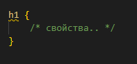
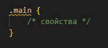
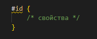
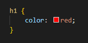

Что такое CSS?
CSS (Cascading Style Sheets) - это язык стилей, который используется для описания внешнего вида документа, написанного с использованием языка разметки, такого как HTML или XML. Он позволяет разделить содержимое документа от его внешнего вида, что позволяет легко изменять внешний вид сайта без изменения самого содержимого.
В CSS есть три основные сущности: селекторы, правила и значения.
Селекторы используются для выбора элементов на странице, которые нужно изменить. Существует множество различных типов селекторов, таких как теги, классы и идентификаторы.
Классы и инентификаторы должны прописываться в HTML документе для какого-нибудь элемента, который вы хотите изменить отдельно от других. Классы прописываются с помощью атрибута class со значением равным названию класса. В CSS элементы с классом указываются с помощью точки после которой идет название класса.
Индефикаторы аналогично, с помощью атрибута id и в CSS указываются с помощью #.
Правила - это инструкции, которые определяют, как должен выглядеть выбранный элемент. Правило состоит из свойства и значения.
Значения - это то, что присваивает свойству определенное значение. Например, если свойство - это цвет текста, то значение может быть "красный" или "синий".
В этом примере мы используем селекторы h1 и .highlight для выбора элементов на странице. Для каждого из этих элементов мы определяем правила со свойствами color"" и font-size"" для первого селектора и background-color"" для второго селектора соответственно, и соответствующими значениями "blue", "36px", "yellow". После каждой пары свойство-значение нужно ставить точку с запятой.
Не пугайтесь, что не понимаете что значат некоторые свойства и их свойства, далее в главе мы рассмотрим основные свойства.
Зачем нужны div и span?
В предыдущих главах не было придано много внимания тегам div и span, потому что не было в этом особой потребности. Но сейчас когда мы подошли к стилизации нашей страницы, то стоит ознакомится с этими элементами.
HTML элементы div и span являются блочными и строчными элементами соответственно, и они обычно используются для группировки и стилизации содержимого.
div является блочным элементом, который обычно используется для группировки содержимого в блоке. Это может быть использовано для определения секций сайта, таких как заголовок, контент, подвал и т.д. и может быть использован для назначения стилей через CSS.
span является строчным элементом, который обычно используется для группировки мелких частей текста или другого содержимого внутри блочного элемента. Это может быть использовано для назначения стилей на отдельный фрагмент текста или другого содержимого без затрагивания остального содержимого. Например, может быть использован для изменения цвета только определенного слова в предложении.
Оба эти элемента могут быть использованы в сочетании с CSS для создания более сложных и динамичных дизайнов веб-страниц.
Основные свойства
CSS-свойства влияющие на цвет и фон
color: — CSS-свойство влияющее на цвет текста: заголовка, абзаца, ссылки и т.д. В качестве его значения выступает имя цвета или шестнацатеричный код в RGB-формате.
Примеры кода с использованием CSS-свойства color:
color: green; — текст должен быть зелёного цвета, в качестве значения задано имя цвета,
color: #008800; — текст должен быть зелёного цвета, в качестве значения задан шестнадцатеричный код в RGB-формате.
background-color: — CSS-свойство влияющее на цвет фона заголовка, абзаца, ссылки и т.д. В качестве его значения выступает имя цвета или шестнацатеричный код в RGB-формате.
Примеры кода с использованием CSS-свойства background-color:
background-color: blue; — фон должен быть синего цвета,
background-color: #0000ff; — фон должен быть синего цвета.
background-image: — CSS-свойство устанавливающее изображение, в качестве фона фона заголовка, абзаца, ссылки и т.д. Его значением выступает URL (адрес) изображения.
Примеры кода с использованием CSS-свойства background-image:
background-image: url(http://имя домена.ru/kartinka.jpg); — фоном должно стать изображение, находящееся по адресу http://имя домена.ru/kartinka.jpg
CSS-свойства влияющие на шрифт
font-size: — CSS-свойство влияющее на размер шрифта заголовка, абзаца, ссылки и т.д. В качестве его значения выступает единица измерения: пиксель (px), процент (%), пункт (pt) и т.д.
Примеры кода с использованием CSS-свойства font-size:
font-size: 17px; — размер шрифта должен быть 17 пикселей,
font-size: 20pt; — размер шрифта должен быть 20 пунктов.
font-family: — CSS-свойство устанавливающее имя шрифта для заголовка, абзаца, ссылки и т.д. В качестве его значения выступает имя шрифта: Arial, Courier, Impact, Garamond, Georgia, Helvetica, Tahoma, Times (установлен по-умочанию), Verdana и т.д.
Примеры кода с использованием CSS-свойства font-family:
font-family: Arial; — имя шрифта должно быть Arial,
font-family: Impact; — имя шрифта должно Impact.
font-style: — CSS-свойство влияющее на начертание (стиль) шрифта заголовка, абзаца, ссылки и т.д. В качестве его значения выступает: normal, oblique.
Примеры кода с использованием CSS-свойства font-style:
font-style: normal; — нормальное начертание шифта,
font-style: oblique; — наклонное начертание шифта.
font-weight: — CSS-свойство влияющее на толщину шрифта заголовка, абзаца, ссылки и т.д. В качестве его значения выступет: normal, bold.
Примеры кода с использованием CSS-свойства font-weight:
font-weight: normal; — нормальное начертание шифта,
font-weight: bold; — жирное начертание шифта.
CSS-свойства влияющие на текст
text-align: — CSS-свойство влияющее на выравнивание текста в заголовке, абзаце и других блочных элементах. В качестве его значения выступает: left, center, right, justify.
Примеры кода с использованием CSS-свойства text-align:
text-align: left; — выравнивание текста по левому краю (установлен по-умолчанию),
text-align: center; — выравнивание текста по центру,
text-align: right; — выравнивание текста по правому краю,
text-align: justify; — равномерное выравнивание текста по левому и правому краям.
text-indent: — CSS-свойство влияющее на отступ первой строки (красная строка) текста в закаловке, абзаце и других блочных элементах. В качестве его значения выступает единица измерения: пиксель (px), процент (%), пункт (pt) и т.д.
Примеры кода с использованием CSS-свойства text-indent:
text-indent: 20px; — отступ первой строки равен 20 пикселям,
text-indent: 15pt; — отступ первой строки равен 15 пунктам.
line-height: — CSS-свойство влияющее на расстояние между строками текста (интерлиньяж) заголовка, абзаца, ссылки и т.д. В качестве его значения выступает единица измерения: множитель, пиксель (px), процент (%), пункт (pt) и т.д.
Примеры кода с использованием CSS-свойства text-indent:
line-height: 35px; — расстояние между строками равно 35 пикселей,
line-height: 1.5; — расстояние между строками равно 1.5 по множителю (аналогичен 150%).
letter-spacing: — CSS-свойство влияющее на расстояние между символами в словах заголовка, абзаца ссылки и т.д. В качестве его значения выступает единица измерения: пиксель (px), процент (%), пункт (pt) и т.д.
Примеры кода с использованием CSS-свойства letter-spacing:
letter-spacing: 3px; — расстояние между символами в словах, равно 3 пикселя,
letter-spacing: 5pt; — расстояние между символами в словах, равно 5 пунктов.
word-spacing: — CSS-свойство влияющее на расстояние между словами в тексте заголовка, абзаца, ссылки и т.д. В качестве его значения выступает единица измерения: пиксель (px), процент (%), пункт (pt) и т.д.
Примеры кода с использованием CSS-свойства word-spacing:
word-spacing: 10px; — расстояние между словами, равно 10 пикселей,
word-spacing: 7pt; — расстояние между словами, равно 7 пунктов.
text-transform: — CSS-свойство влияющее на вид букв в тексте, делая их прописными или строчными. В качестве его значения выступает: capitalize, lowercase, uppercase.
Примеры кода с использованием CSS-свойства text-transform:
text-transform: capitalize; — первая буква каждого слова начинается с верхнего регистра,
text-transform: uppercase; — все буквы в тексте записываются в верхнем регистре,
text-transform: lowercase; — все буквы в тексте записываются в нижнем регистре.
text-shadow: — CSS-свойство создающее тень текста.
В качестве его значения выступает: цвет ось-x ось-y радиус.
Пример кода с использованием CSS-свойства text-shadow:
text-shadow: green 3px 2px 2px; — тень будет зелёного цвета, со сдвигом в лево на 3 пикселя, со сдвигом вниз на 2 пикселя, радиус (разброс тени) будет составлять 5 пикселей.
CSS-свойства влияющие на границу (обводку)
border-color: — CSS-свойство влияющее на цвет границ заголовка, абзаца, ссылки и т.д. В качестве его значения выступает имя цвета или его шестнацатеричный код в RGB-формате.
Примеры кода с использованием CSS-свойства border-color:
border-color: green; — зелёный цвет обводки,
border-color: #008800; — зелёный цвет обводки, задан в шестнадцатеричном коде RGB-формата.
border-width: — CSS-свойство влияющее на толщину границ заголовка, абзаца, ссылки и т.д. В качестве его значения выступает единица измерения: пиксель (px).
Примеры кода с использованием CSS-свойства border-width:
border-width: 1px; — толщина обводки равна 1 пикселю,
border-width: 3px; — толщина обводки равна 3 пикселям.
Примеры кода с использованием CSS-свойства border-style:
border-style: solid; — обводка как сплошная линия,
border-style: dashed; — обводка в виде отрезков,
border-style: dotted; — обводка в виде точек,
border-style: double; — обводка в виде двойной сплошной линии.
Задание
Попробуйте поиграться со свойствами и попробуйте оформить созданный вами сайт-портфолио.